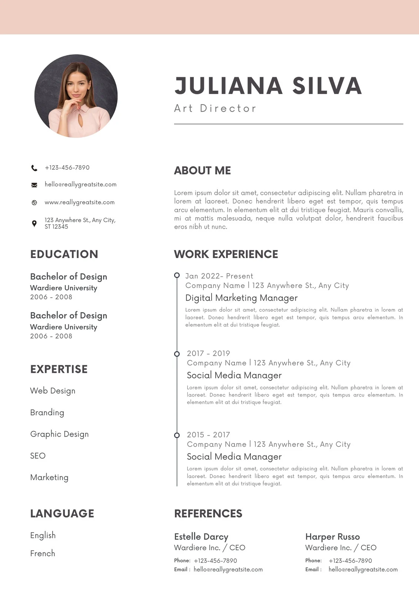
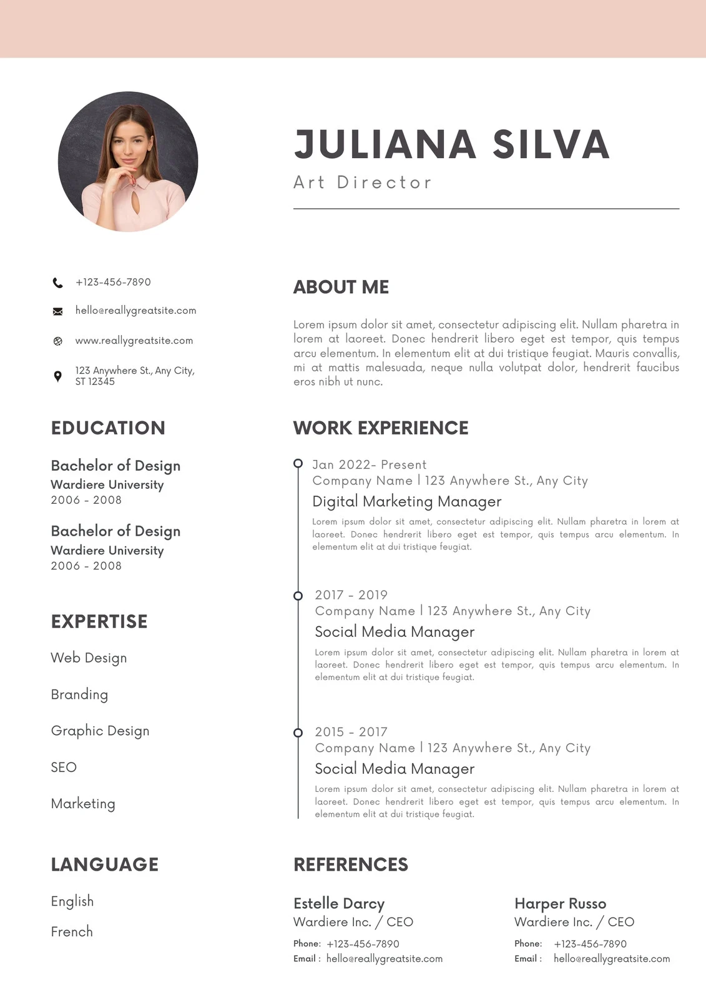

ONLINE RESUME BUILDER
Only 2% of resume make it past the first round . Be in the top 2%
Use professional field-tested resume templates that follow the exact 'resume rules' employers look for . Easy to use and done within minutes - try now for free
ONLINE RESUME BUILDER
Use professional field-tested resume templates that follow the exact 'resume rules' employers look for . Easy to use and done within minutes - try now for free
 


Getting a dream job can seem like an impossible task. We're here to change that. Give yourself a real advantage with the bets online resume maker , created by experts , improved by data, trusted by millons of professionals.
Use our resume maker with it's advanced creation tools to tell a professional story that engages recuriters, hiering managers and even CEO.
Resume writing has never been this effortless. Pre-generated text , visual designs and more - all already integrated in the resume maker . Just fill in your details.
Our resume builder and its pre-generated content are tested by recruiters and IT experts . We help your CV become truly competitive in the hiring process.